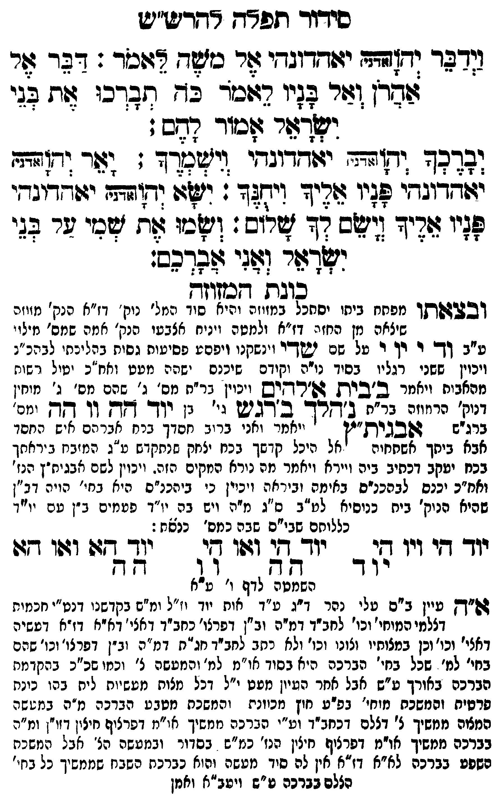

Neue Klartextfassung
וידבר יהוה (אדני) יאהדונהי אל משה לאמר: דבר אל אהרן ואל בניו לאמר כה תברכו את בני ישראל אמור להם: יברכך יהוה (אדני) יאהדונהי וישמרך: יאר יהוה (אדני) יאהדונהי פניו אליך ויחנך: ישא יהוה (אדני) יאהדונהי פניו אליך וישם לך שלום: ושמו את שמי על בני ישראל ואני אברכם: ■ כונת המזוזה ■ (ובצאתו מפתח ביתו) [יסתכל במזוזה והיא סוד המל' נוק' דז"א הנק' מזוזה שיצאה מן החזה דז"א ולמטה ויניח אצבעו הנק' אמה שמס' מילוי ע"ב וד י יו י על שם שדי וינשקנו ויפסע פסיעות גסות בהליכתו לבהכ"נ ויכוין ששני רגליו בסוד נו"ה וקודם שיכנס ישהה מעט ואח"כ יטול רשות מהאבות ויאמר בבית אלהים ויכוין בר"ת מס' ג' שהם מס' ג' מוחין דנוק' הרמוזה בר"ת נהלך ברגש גי' ב"ן יוד הה וו הה ומס' ברג"ש אבגית"ץ ויאמר ואני ברוב חסדך בכח אברהם איש החסד אבא ביתך אשתחוה אל היכל קדשך בכח יצחק שנתקדש ע"ג המזבח ביראתך בכח יעקב דכתיב ביה ויירא ויאמר מה נורא המקום הזה. ויכוין לשם אבגית"ץ הנז' ואח"כ יכנס לבהכנ"ס באימה וביראה ויכוין כי ביהכנ"ס היא בחי' הויה דב"ן שהיא הנוק' בית כנוסיא לע"ב ס"ג מ"ה ויש בה יו"ד פעמים ב"ן עם יו"ד כללותם שבי"ס שבה כמס' כנסת:] === טבלה === [טור ימין] יוד הי ויו הי יוד [טור אמצעי] יוד הי ואו הי הה וו [טור שמאל] יוד הא ואו הא הה === סוף טבלה === (השמטה לדף ו' ע"א) [א"ה עיין בס' עלי נהר ד"ג ע"ד אות יוד וז"ל ומ"ש בקדשנו דנט"י חכמות דצלמי המוחי' וכו' לכחב"ד דמ"ה וב"ן דפרצו' כחב"ד דאצי' דא"א דז"א דעשיה דאצי' וכו' וכן במצותיו וצונו וכו' ולא כתב לחב"ד חג"ת דמ"ה וב"ן דפרצו' וכו' שהם בחי' למ'. שכל בחי' הברכה היא בסוד או"מ למ' והמעשה צ' וכמו שכ"כ בהקדמת הברכה באורך ע"ש אבל אחר העיון מעט י"ל דכל מצות מעשיות לית בהו כונת פרטית והמשכת מוחי' בפ"ע חוץ מכוונת והמשכת מטבע הברכה מ"ה במעשה המצוה ממשיך צ' דצלם דכחב"ד וע"י הברכה ממשיך או"מ דפרצוף חיצון דזו"ן ומ"ה בברכה ממשיך או"מ דפרצוף חיצון הנז' כמ"ש בסדור ובמעשה הצ' אבל המשכת השפע בברכה לא"א דז"א אין לה סוד מעשה והוא כברכת השבח שממשיך כל בחי' צלם בברכה ע"ש ויעב"א ואמן:]
Original gegen neue OCR · Niqqud für Vergleich ausgeblendet
Original
וידבר יהוה (אדני) יאהדונהי אל משה לאמר: דבר אל אהרן ואל בניו לאמר כה תברכו את בני ישראל אמור להם: יברכך יהוה (אדני) יאהדונהי וישמרך: יאר יהוה (אדני) יאהדונהי פניו אליך ויחנך: ישא יהוה (אדני) יאהדונהי פניו אליך וישם לך שלום: ושמו את שמי על בני ישראל ואני אברכם: ■ כונת המזוזה ■ (ובצאתו מפתח ביתו) [יסתכלK103-001 במזוזה והיא סוד המל'K103-002 נוק' דז"א הנק' מזוזהK103-003 שיצאה מן החזהK103-004 דז"א ולמטה ויניח אצבעוK103-005 הנק' אמה שמס' מילויK103-006 ע"ב וד יK103-007 יו י על שם שדיK103-008 וינשקנו ויפסע פסיעות גסות בהליכתוK103-009 לבהכ"נ ויכוין ששני רגליו בסודK103-010 נו"ה וקודםK103-011 שיכנס ישהה מעט ואח"כ יטול רשות מהאבותK103-012 ויאמר בבית אלהיםK103-013 ויכוין בר"תK103-014 מס' ג' שהם מס' ג' מוחין דנוק' הרמוזהK103-015 בר"ת נהלך ברגשK103-016 גי' ב"ן יוד הה וו הה ומס'K103-017 ברג"ש אבגית"ץ ויאמרK103-018 ואני ברוב חסדך בכחK103-019 אברהם איש החסד אבא ביתך אשתחוהK103-020 אל היכל קדשך בכח יצחק שנתקדש ע"גK103-021 המזבח ביראתךK103-022 בכח יעקב דכתיבK103-023 ביה וייראK103-024 ויאמר מה נורא המקוםK103-025 הזה. ויכוין לשם אבגית"ץK103-026 הנז' ואח"כ יכנסK103-027 לבהכנ"ס באימה וביראה ויכוין כיK103-028 ביהכנ"ס היאK103-029 בחי' הויהK103-030 דב"ן שהיא הנוק' ביתK103-031 כנוסיא לע"ב ס"גK103-032 מ"ה וישK103-033 בה יו"ד פעמיםK103-034 ב"ן עםK103-035 יו"ד כללותםK103-036 שבי"ס שבה כמס' כנסת:] === טבלה === [טור ימין]K103-037 יוד הי ויו הי יוד [טור אמצעי] יוד הי ואו הי הה וו [טור שמאל] יוד הא ואו הא הה === סוף טבלה === (השמטהK103-038 לדף ו' ע"א) [א"הK103-039 עיין בס' עליK103-040 נהר ד"ג ע"ד ∅K103-041 אות יוד וז"לK103-042 ומ"ש בקדשנו דנט"י חכמותK103-043 דצלמי המוחי' וכו' לכחב"ד דמ"הK103-044 וב"ן דפרצו' כחב"ד דאצי' דא"א דז"א דעשיהK103-045 דאצי' וכו' וכן במצותיו וצונו וכו' ולא כתבK103-046 לחב"ד חג"תK103-047 דמ"ה וב"ןK103-048 דפרצו' וכו' שהם בחי' למ'.K103-049 שכל בחי' הברכה היא בסודK103-050 או"מ למ' והמעשהK103-051 צ' וכמו שכ"כ בהקדמת הברכהK103-052 באורך ע"ש אבל אחר העיון מעט י"ל דכל מצות מעשיות לית בהו כונתK103-053 פרטית והמשכתK103-054 מוחי' בפ"ע חוץK103-055 מכוונת והמשכת מטבעK103-056 הברכה מ"ה במעשהK103-057 המצוה ממשיך צ' דצלם דכחב"ד וע"י הברכה ממשיך או"מ דפרצוף חיצוןK103-058 דזו"ן ומ"ה בברכה ממשיך או"מ דפרצוף חיצוןK103-059 הנז' כמ"ש בסדור ובמעשה הצ'K103-060 אבל המשכת השפעK103-061 בברכה לא"א דז"א אין לה סוד מעשהK103-062 והוא כברכתK103-063 השבח שממשיך כל בחי' צלםK103-064 בברכה ע"ש ויעב"א ואמן:]K103-065
OCR · fehlbar
כידור תפ"ח רחרישיש דבד וד[זדבף ידתדדוגדי זר כזשד זוכר: ד2ב- אזר שבדן וזר פ(יו דזזכר בג ףבדכו לות בגי וש-צזר אכוך דדס ועדבך ודזדדד ידודדוגדי זיישמךד ג (6ד ודזזתג יגדדוגחי לגיו דיד וילד: ושוו: ודוגתז יצודדוגדי פ(יו זדיד [(שס צד זל: בו אח שכי שר בגי יצאדצזי (6:י שצדנב: סובת דכז[וזח ובבלבגדתקך מפחח ביחו יסחכלK103-001 במזוזה והיא סוד י:מל'K103-002 נוק' דז"א הנק' מוזהK103-003 שיצאה מן החזנK103-004 דז"א ולמטה ויניח אצבעיK103-005 הנק' אמה שמס' מילזיK103-006 ע"ב ךך-K103-007 יו יך ר טל שח ישדךךוK103-008 וינשקנו ויפסע פסיטות גסיח בהל ירחיK103-009 לבהכ"נ ויכוין ששני רגליו בסיךK103-010 נו"ה וקידםK103-011 שיכנס ישהה מעט ואח"כ יטיל רשוח מהאבוחK103-012 ויאמר ב"בית דפ"רד[ישK103-013 ויכוין גר"חK103-014 מס' ג' שהם מס' ג' מוחין דנוק' הרוזוזהK103-015 בר"ת גדשרך ב ידגישK103-016 גי' דן יוד' גץ (ו אק ימח.K103-017 ברג"ש ז[בג(ת"ן ייאמרK103-018 ואני ברוב חסדך ברחK103-019 אברהם איש החסד אבא ביחך אשחחיה זK103-020 אל היכל קדשך בכח יצחק שנתקדש מ"גK103-021 המזבח ב יראתךK103-022 בכח יעקב דכחיבK103-023 ביה ויידאK103-024 ויאמר מה נורא המקיםK103-025 הזה. ויכוין לשם אבגיח"ץK103-026 הנז' ואח"כ יכנםK103-027 לבהכנ"ס באימה וביראה ויכיין ניK103-028 ביהכנ"ס ה"אK103-029 בחי' הויה'K103-030 דב"ן שהיא הנוק' ביחK103-031 כנוסיא למ"ב ח"גK103-032 מ"ה ויבK103-033 בה יו"ד פטמיםK103-034 ב"ן טםK103-035 יו"ד כללוחםK103-036 שבי"ס שבה כמס' כנשאת: יוך דדי ויו חK103-037 יוד 2- וזוו גי ילך דזג( וגו ודג: י ד - ח - ו ך ח ד השמטהK103-038 לדף י' ע"א דפ"ךץK103-039 עיין ב"ם טליK103-040 נהר ד"ג ע"ד -K103-041 אות יוד (ז"לK103-042 ומ"ש בקדשנז דנט"' חכמיתK103-043 דצלמי המוחי' וכו' לחב"ד דמיהK103-044 וב"ן דפרצו' כחב"ד דאצי' דא"א דזזא דטשיהK103-045 דאצי' וכו' וכן במצותיו וצונו וכו' ולא רחבK103-046 לחב"ד חג"חK103-047 דמ"ה (ב"ןK103-048 דפרצו' וכו' שהם בחי' למ'K103-049 שכל בחי' הברכה היא בסוךK103-050 או"מ למ' והמטשהK103-051 צ' וכחו בכ"כ בהקדמח הברכםK103-052 באורך ע"ש אבל אחר העיון מעט י"ל דכל מצות מעשיוח ליח בהן כינתK103-053 פרטית והמשצחK103-054 מוחי' בפ"ע זיץK103-055 מכוונת והמשכת מטב עK103-056 הברכה מ"ה במששהK103-057 המצוה ממשיך צ' דצלם דכחב"ד וע"י הברכה ממשיך או"מ דפרצוף חיציןK103-058 דזו"ן ומ"ה בברכה ממשיך או"מ דפרציח חוציןK103-059 הנז' כמ"ש בסדור ובמעשה הנ'K103-060 אבל ומשכת רשפעK103-061 בברכה לא"א דז"א אין לה סיד מטשהK103-062 והוא כברכחK103-063 השבח שממשיך כל בחי' הצלםK103-064 בברכה ש"ש ויטב"א ואמןK103-065